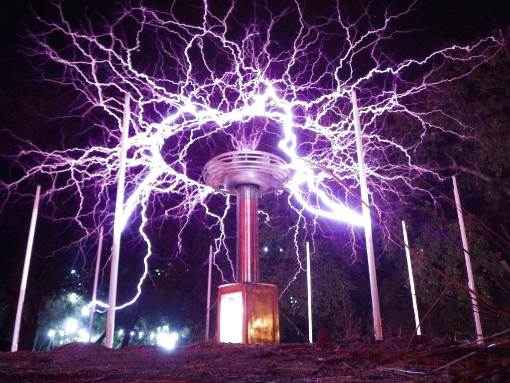

Bobina de Tesla
A Bobina de Tesla é um transformador ressonante utilizado para produzir altas tensões elétricas. Foi uma das invenções mais conhecidas de Tesla e ainda é usada em demonstrações de ciência.
Corrente Alternada (CA)
Tesla foi um dos pioneiros na promoção e desenvolvimento da corrente alternada (CA), que é amplamente usada hoje em dia na transmissão de energia elétrica.

Motor de Indução
O motor de indução, também conhecido como motor Tesla, é um tipo de motor elétrico que funciona com base nos princípios de indução eletromagnética propostos por Tesla.